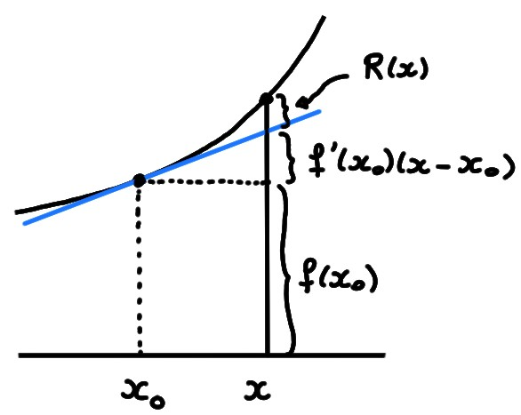
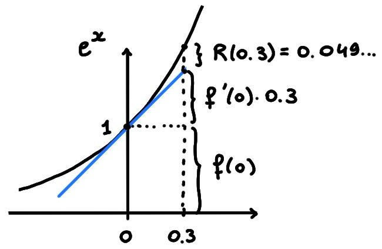

9.1 Introduction
Rappelons que la dérivabilité d'une fonction \(f\) en un point \(x_0\) fournit
une approximation de \(f\) dans le voisinage de \(x_0\),
dite du premier ordre:
\[f(x)\simeq f(x_0)+f'(x_0)(x-x_0)\,.\]

Pour être plus précis, rappelons que la dérivabilité entraîne l'existence d'une
fonction \(r_{x_0}(x)\) telle que \(\lim_{x\to x_0}r_{x_0}(x)=0\), et telle que
\[\begin{aligned}
f(x)
&=f(x_0)+(f'(x_0)+r_{x_0}(x))(x-x_0)\\
&=
\underbrace{\underbrace{f(x_0)}_{
\text{ordre zéro}}+f'(x_0)(x-x_0)}_{1^{er}\,\,ordre}
+\underbrace{r_{x_0}(x)(x-x_0)}_{=R(x)\text{, reste}}\,.
\end{aligned}\]
Cette dernière expression doit être lue de la façon suivante:
pour un \(x\) proche de \(x_0\), la valeur de \(f(x)\) est
égale à
- sa valeur en \(x_0\), \(f(x_0)\), à laquelle il faut rajouter...
- une correction linéaire en \(x-x_0\), \(f'(x_0)(x-x_0)\), à laquelle on
rajoute encore...
- un reste \(R(x)=(x-x_0)\varepsilon(x)\).
La somme des trois termes donne
exactement \(f(x)\), et ils sont en ordre
décroissant d'importance (voir la figure ci-dessus): la correction
linéaire est petite puisque \(x-x_0\) est petit, puis le reste est petit
puisque \(\lim_{x\to x_0}R(x)=0\), mais en fait il est
beaucoup plus petit que la correction linéaire, puisque
\[
\lim_{x\to x_0}\frac{R(x)}{x-x_0}=0\,.
\]
Le reste \(R(x)\) est ''doublement'' petit, puisque c'est le produit de
\(x-x_0\) (qui est petit lorsque \(x\) est proche de \(x_0\))
par \(r_{x_0}(x)\) (qui est proche de
zéro lorsque \(x\) est proche de \(x_0\)).
Considérons
\(f(x)=e^x\), au voisinage du point \(x_0=0\), \(f(0)=1\) et
\(f'(0)=1\).
Si on s'intéresse par exemple au point \(x=0.3\), on obtient
\[
f(0.3)=
\underbrace{f(0)}_{1}
+\underbrace{f'(0)0.3}_{0.3}
+\underbrace{0.3 r_0(0.3)}_{0.0498...}
\]

Ce qu'on peut donc dire, pour une fonction dérivable en un point \(x_0\), c'est
que l'approximation linéaire \(x\mapsto f(x_0)+f'(x_0)(x-x_0)\) fournit une
bonne approximation dans le voisinage de \(x_0\), dans le sens où on peut
quantifier explicitement la taille du reste, en fonction de \(x\).